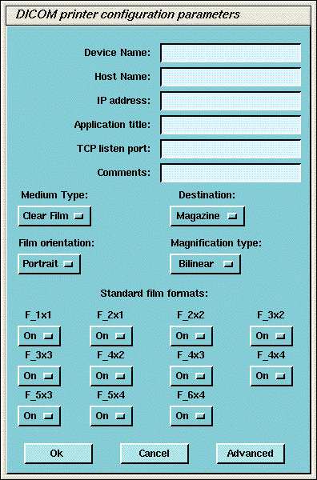

Device Name - A unique name used to identify the camera.
Host Name - DICOM print server host name, as defined by the hospital.
IP Address - DICOM print server IP address, as defined by the hospital.
AE Title - DICOM print server application entity title, as defined by the print server.
| NOTE: | You should consult the manufacturer's DICOM Conformance Statement. The Application Entity Title for the Camera may be site specific. Make sure that you check with the Camera Manufacturer’s Representative and the hospital network administrator to ensure you are using the correct AE Title for the destination DICOM Print Camera. |
TCP/IP Listen Port - DICOM print server TCP/IP listen port, as defined by the server. (You should consult the manufacturers DICOM Conformance Statement.)
Comments - Optional comments used by the DICOM print server.
Illustration 7: DICOM Camera Configuration
